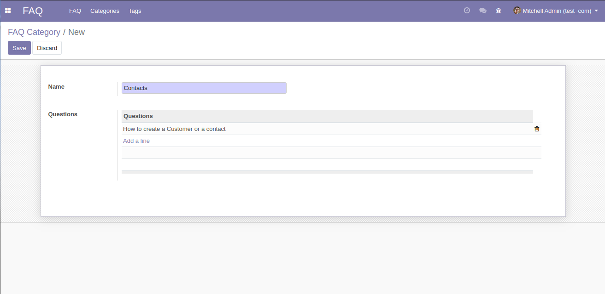
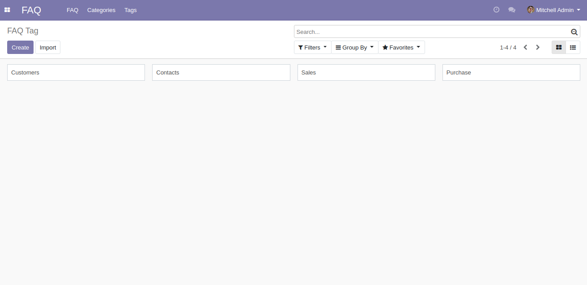

This Application helps you store valubale information that your employees ask about the Products and services.
Key Features:
You can add up attachments and add URL Links
Tags and categories Added
Facilitates to use the system Better
How it Works
Create Your categories and Option Provided to create your FAQs under the 'Questions' Tab or you can directly create them in the FAQ Menu by tagging the category.

To create Tags, Go to FAQ --> 'Tags' --> Click 'Create'.

To create FAQs , Go to FAQ --> Click 'Create'.
Post your questions and answers, You can leave URL Links and attachments for references.
You can tag Categories and Tags as depiected in the below image.